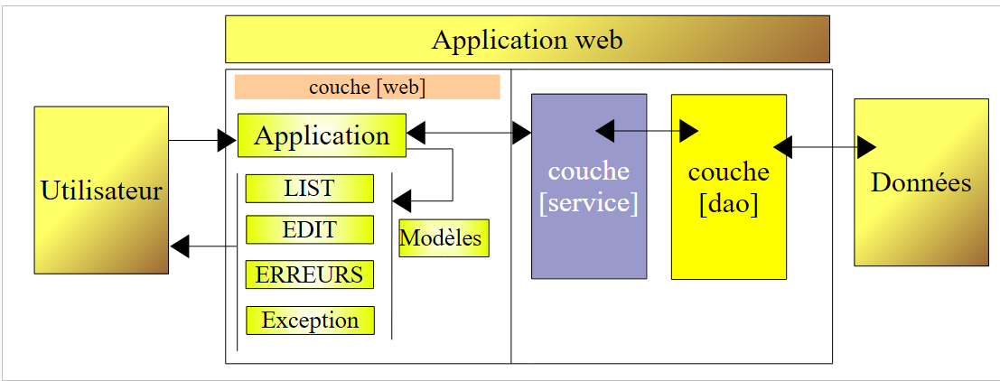
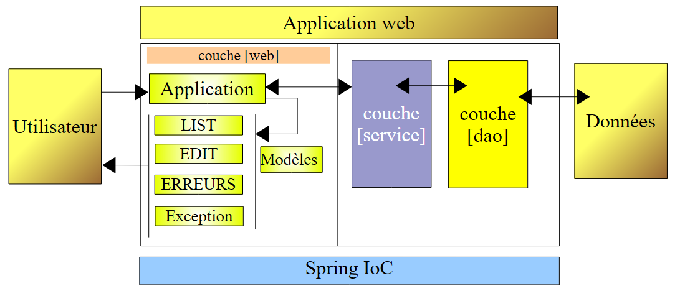

16. 三层架构中的 MVC Web 应用程序——示例 2
16.1. 简介
我们编写了 [people-01] 应用程序，其结构如下：
 |
[dao]层使用[ArrayList]对象实现了人员列表的管理。这使我们能够避免让[dao]层和[service]层过于复杂，从而能够专注于[web]层。 我们希望将应用程序演进到更贴近实际的环境中，即人员列表将存储在数据库表中。这将要求我们修改 [dao] 层，并会影响其他两层。为了充分利用 Spring IoC 提供的分层独立性，我们将对 [people-01] 应用程序进行 Spring IoC 配置：
 |
新应用程序将命名为 [people-02]。一旦编写完成，我们便知道可以修改 [DAO] 和 [service] 层，而无需更改 [web] 层的代码。这正是我们所追求的目标。
我们通过复制并粘贴 [people-01] 项目来创建一个新的 Eclipse 项目 [people-02]，具体操作如第 6.2 节所述：
 |
在 [1] 中，我们可以看到配置文件已生成，我们将在此文件中定义 [dao] 和 [service] 层的 Bean。其内容如下：
<?xml version="1.0" encoding="UTF-8"?>
<!DOCTYPE beans PUBLIC "-//SPRING//DTD BEAN//EN" "http://www.springframework.org/dtd/spring-beans.dtd">
<beans>
<!-- the dao class -->
<bean id="dao" class="istia.st.mvc.personnes.dao.DaoImpl" init-method="init"/>
<!-- service class -->
<bean id="service" class="istia.st.mvc.personnes.service.ServiceImpl">
<property name="dao">
<ref local="dao" />
</property>
</bean>
</beans>
- 第 5 行：将名为 [dao] 的 Bean 定义为 [DaoImpl] 类的实例。实例化后，将执行该实例的 [init] 方法。
- 第 7–10 行：将名为 [service] 的 Bean 定义为 [ServiceImpl] 类的实例。
- 第 8–10 行：将 [DaoImpl] 实例的 [dao] 属性初始化为第 5 行创建的 [dao] 层的引用。请注意，[ServiceImpl] 类确实拥有 [dao] 属性及其对应的 setter 方法：
当然，仅凭这个文件是无法实现任何功能的。[Application] 控制器将在其 [init] 方法中使用它来实例化 [service] 层。让我们回顾一下控制器 [init] 方法的先前版本：
在第 5 行，我们必须显式指定 [service] 层的实现类，而在第 12 行，则需指定 [dao] 层的实现类。使用 Spring IoC 后，[init] 方法变为如下形式：
- 第 7 行：私有字段 [service] 的类型不再是 [ServiceImpl]，而是 [IService]，即 [service] 层的接口类型。因此，[web] 层不再与该接口的特定实现绑定。
- 第 14 行：从配置文件 [spring-config.xml] 初始化 [service] 字段。
以上就是需要做的全部修改。现在将这个新应用程序集成到 Tomcat 中，启动它，然后访问 URL [http://localhost:8080/personnes-02]：

16.2. 归档 Web 应用程序
我们为一个三层应用程序开发了一个 Eclipse/Tomcat 项目：
 |
在未来的版本中，人员组将存储在数据库表中。
- 这将需要重写 [DAO] 层。这一点很容易理解。
- [服务]层也将进行修改。目前，其唯一作用是确保对[DAO]层管理的数据进行同步访问。为此，我们已将[服务]层中的所有方法进行了同步。 我们已解释过为何将这种同步置于该层而非 [DAO] 层。在新版本中，[service] 层仍将仅承担同步访问这一职责，但这将通过数据库事务来处理，而非通过同步 Java 方法。
- [Web] 层将保持不变。
为了方便从一个版本过渡到下一个版本，我们正在创建一个新的 Eclipse 项目 [mvc-personnes-02B]，该项目是之前项目 [mvc-personnes-02] 的副本，但其中的 [Web、服务、DAO、实体] 层已被封装到 .jar 归档文件中：
 |
[src] 文件夹现在仅包含 Spring 配置文件 [spring-config.xml]。此前该文件夹还包含 Java 类的源代码。这些元素已被移除，并由其编译后的版本取代，这些版本存放在 [1] 中所示的 [people-*.jar] 归档文件中：
 |
[mvc-personnes-02B] 项目已配置为在其 ClassPath 中包含 [personnes-*.jar] 归档文件。
我们将 Web 项目 [mvc-personnes-02B] 部署到 Tomcat 中：
 |  |
要测试该项目，我们启动 Tomcat，然后访问 URL [http://localhost:8080/personnes02B]：

欢迎读者进行进一步的测试。
在数据库版本中，我们将修改 [service] 和 [dao] 层。我们希望说明，只需将前一个项目中的 [personnes-dao.jar] 和 [personnes-service.jar] 文件替换为新文件，我们的应用程序即可支持数据库运行。我们无需修改 [web] 层和 [entities] 层的文件。